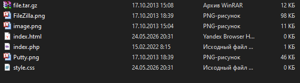
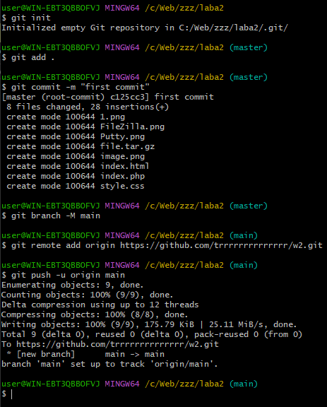
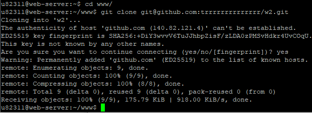
После клонирования репозитория все файлы стали доступны по адресу http://u82311.kubsu-dev.ru/w2/.
Все запросы отправлялись через программу PuTTY (подключение по SSH к u82311.kubsu-dev.ru). Настройки подключения показаны на рис. 4.
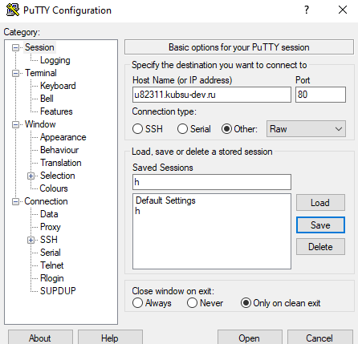
Примеры всех запросов были предварительно записаны в файл http.txt (рис. 5).
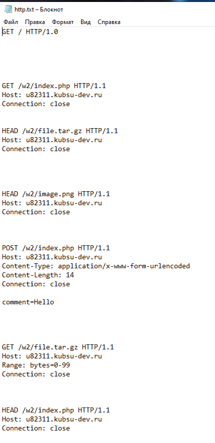
Запрос: GET / HTTP/1.0
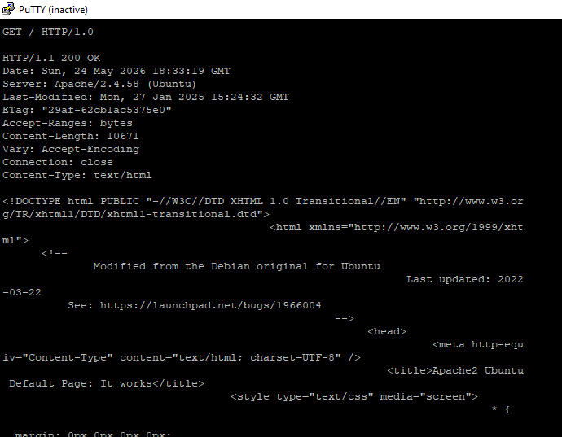
Сервер вернул стандартную страницу приветствия Apache2 Ubuntu.
Запрос: GET /w2/index.php HTTP/1.1
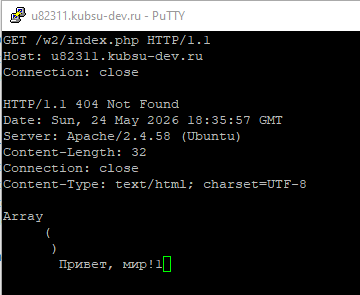
Файл index.php на сервере возвращает 404 и выводит массив данных, что соответствует логике задания (код 404 не является ошибкой, а особенностью реализации).
Запрос: HEAD /w2/file.tar.gz HTTP/1.1
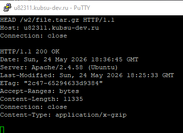
Размер файла 11335 байт (около 11 КБ).
Запрос: HEAD /w2/image.png HTTP/1.1
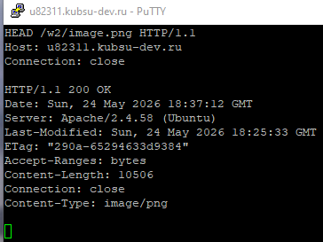
Медиатип – image/png.
Запрос: POST /w2/index.php HTTP/1.1 с телом comment=Hello
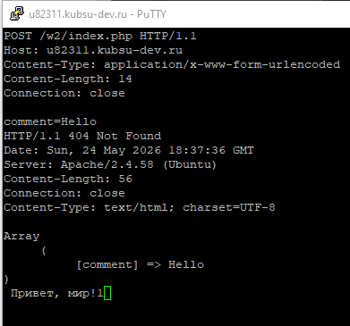
Сервер принял параметр comment и вернул его в массиве. Код ответа – 404, как и в задании 2.2.
Запрос: GET /w2/file.tar.gz HTTP/1.1 с заголовком Range: bytes=0-99
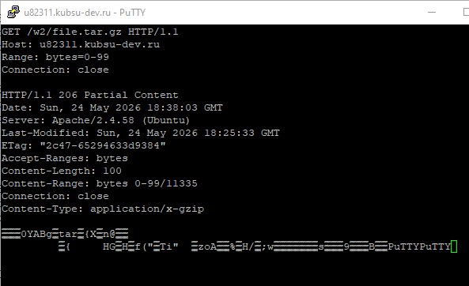
Сервер вернул ровно 100 байт бинарных данных.
Запрос: HEAD /w2/index.php HTTP/1.1
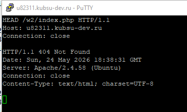
Кодировка ресурса – UTF-8.
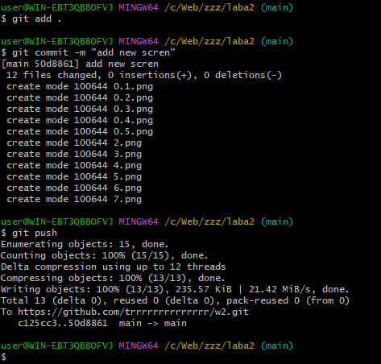
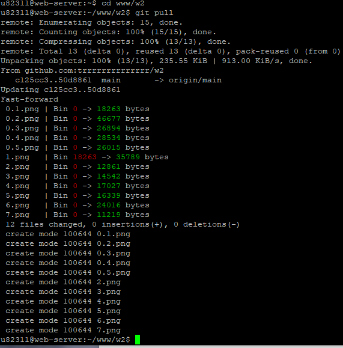
После клонирования репозитория все файлы (index.php, style.css, изображения) стали доступны по адресу http://u82311.kubsu-dev.ru/w2/.